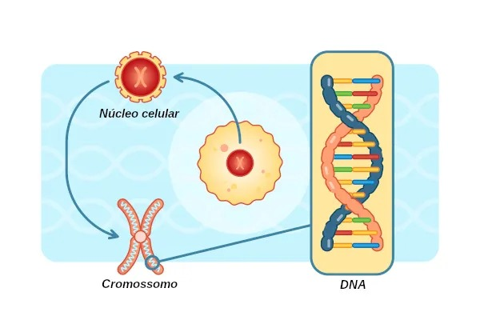

Cromossomos
Sumário
O que é Cromossomo?

Um cromossomo é uma estrutura altamente organizada formada por uma longa molécula de DNA
associada a proteínas, como as histonas e proteínas não-histonas, que auxiliam na
compactação e regulação de sua função. Ele contém muitos genes dispostos em uma sequência
específica, sendo que cada gene ocupa uma posição definida, chamada de lócus. Em
organismos diploides, cada par de cromossomos apresenta genes correspondentes nos mesmos lócus,
mas que podem ter variações chamadas alelos, uma herança da mãe e outra do pai.
Os cromossomos são versões condensadas dos filamentos de cromatina, uma forma menos compacta de
DNA associada a proteínas. A cromatina pode ser encontrada em duas formas principais:
- Eucromatica: DNA mais relaxado e funcional, permitindo a transcrição dos genes.
- Heterocromatica: DNA densamente compactado, onde os genes estão inativos e não são transcritos.
A principal diferença entre cromatina e cromossomo está no grau de compactação. A cromatina,
encontrada durante a interfase (fase em que a célula não está se dividindo), é mais difusa e não
visível ao microscópio óptico comum. Durante a divisão celular, essa cromatina se condensa em
estruturas compactas e visíveis chamadas cromossomos. Esse nível extremo de organização permite
que
o material genético seja distribuído de forma eficiente entre as células-filhas.
Nas células procariontes, os cromossomos têm uma forma circular e estão dispersos no citoplasma,
enquanto nos eucariontes, os cromossomos são lineares e confinados no núcleo celular. Essas
estruturas desempenham um papel fundamental no armazenamento, organização e transmissão do
material
genético de uma geração para outra.
Estrututra do Cromossomos

A estrutura dos cromossomos é composta por diversas partes,onde cada uma desempenha funções essenciais para o armazenamento, a estabilidade e a transmissão do material genético. A seguir, estão as principais partes que compõem os cromossomos:
- Cromômeros: São engrossamentos irregulares com aparência granular, distribuídos ao longo da cromatina. Esses elementos contribuem para a organização estrutural do cromossomo.
- Cromátides: Resultam da divisão longitudinal do cromossomo durante o processo de replicação. Quando um cromossomo é duplicado, ele passa a ser formado por duas cromátides irmãs, conectadas pelo centrômero.
- Centrômero: É a região de constrição primária do cromossomo, essencial para a divisão celular. Nessa área, encontra-se o cinetócoro, um conjunto de proteínas que permite a ligação das cromátides irmãs ao fuso mitótico, garantindo a separação correta durante a anáfase. O centrômero também divide o cromossomo em dois braços, cujos tamanhos podem variar de acordo com sua posição. Com base nessa posição, os cromossomos são classificados em:
- Metacêntricos: Centrômero na posição mediana, com braços de tamanhos iguais.
- Submetacêntricos: Centrômero deslocado, gerando braços de tamanhos diferentes.
- Acrocêntricos: Centrômero próximo de uma das extremidades, criando um braço muito curto e outro mais longo.
- Telocêntricos: Centrômero localizado quase na extremidade, dando a impressão de que o cromossomo tem apenas um braço.
- Satélite: É uma porção terminal do cromossomo, separada do restante por uma constrição secundária. Geralmente, essas áreas estão relacionadas à formação do nucléolo durante a telófase.
- Telômeros: Localizados nas extremidades dos cromossomos, os telômeros são sequências repetitivas de nucleotídeos sem genes codificantes. Sua função é proteger o material genético contra a degradação e impedir que os cromossomos se fundam entre si. Além disso, os telômeros desempenham um papel crucial na manutenção da estabilidade genômica, especialmente durante as divisões celulares.
Cromossomos sexuais, não sexuais e homólogos
Os cromossomos podem ser classificados como não sexuais (ou autossômicos) e sexuais, e ambos desempenham papéis fundamentais na composição genética dos organismos. Além disso, os cromossomos que formam pares correspondentes em organismos diploides são chamados de homólogos. A seguir uma breve descrição de cada um:
Cromossomos não sexuais (autossômicos)
Os cromossomos não sexuais são aqueles que não estão envolvidos na determinação do sexo de um indivíduo. No caso dos humanos, há 22 pares de cromossomos autossômicos, totalizando 44 cromossomos. Cada par é formado por dois cromossomos homólogos: um herdado da mãe e outro do pai. Esses cromossomos possuem tamanhos, formas, posições e número de genes correspondentes, funcionando como "cópias de segurança" para os genes. Além disso, os cromossomos não sexuais carregam a maioria das informações genéticas responsáveis por características gerais do organismo, como altura, cor dos olhos e funcionamento metabólico. Normalmente, os genes presentes em ambos os membros do par podem ser expressos.
Cromossomos sexuais
Os cromossomos sexuais são aqueles que determinam o sexo biológico do indivíduo. Nos humanos, o 23º par de cromossomos é composto por dois cromossomos sexuais: X e Y. Mulheres possuem dois cromossomos X (XX), um herdado de cada progenitor. Homens têm um cromossomo X (herdado da mãe) e um Y (herdado do pai). O cromossomo Y, menor e com menos genes que o X, contém genes específicos que determinam características masculinas, incluindo o desenvolvimento das gônadas masculinas. Já o cromossomo X, maior, possui muitos genes com funções além da determinação sexual, como os genes relacionados à visão e ao metabolismo. Em homens, os genes presentes no cromossomo X não têm uma cópia correspondente no Y, sendo todos expressos. Esses genes são chamados de genes ligados ao sexo.
Cromossomos homólogos
Em organismos diploides, os cromossomos estão organizados em pares chamados homólogos. Cada par é composto por um cromossomo de origem materna e outro de origem paterna, que compartilham a mesma sequência de genes (embora possam ter variações nos alelos desses genes). Nos autossomos, os pares são geralmente idênticos em forma e tamanho, enquanto os cromossomos sexuais podem diferir significativamente entre si, como no caso do par XY nos homens.
Curiosidades
O número de cromossomos varia entre as espécies e não está relacionado à complexidade do organismo. Cada espécie tem um cariótipo próprio, adaptado às suas necessidades biológicas e evolutivas. Veja alguns exemplos:
- Humanos: 46
- Cavalo: 66
- Gambá: 22
- Pepino: 14
- Mamão: 18
- Aveia: 42
- Cão: 78
- Batata: 48